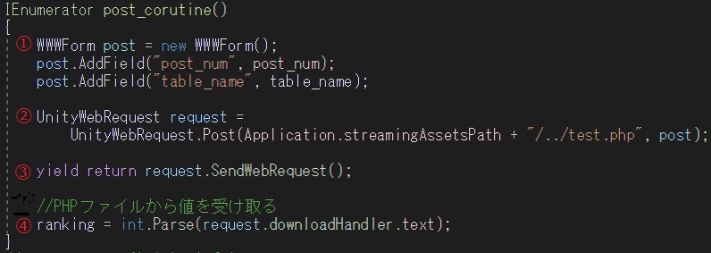
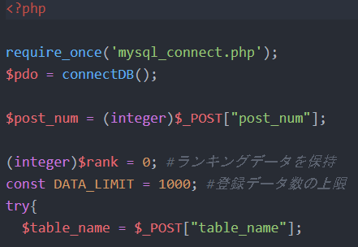
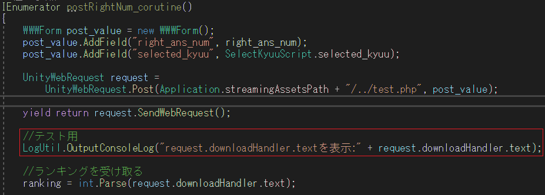

図はデータベースへ接続するためのPHPファイル(mysql_connect.php)です。
データベース名、ホスト名、ユーザ名、ルート名を設定してください。
WebGLからリクエストを受けるPHPファイル(test.php)が実行される際、最初にこのファイルを実行し、 データベースへ接続します。
本ページでは、Unity WebGLからPHPファイルを介してデータベース(MySQL)から所定のデータを取得し、
利用する方法について記します。
WebGL側から、PHPファイルへPOSTを送り、
送られたPOSTの値に応じて、PHPファイルで所定のデータベースへアクセスし、その値をWebGLへ
返し、WebGLで、PHPファイルから返された値を利用する、という方法について書いています。
本ページでは図のようなファイル構成であるとして、説明していきます。
Build : UnityでWebGL形式でビルドした際に作られるファイル
TemplateData : UnityでWebGL形式でビルドした際に作られるファイル
index.html : UnityでWebGL形式でビルドした際に作られるファイル。このhtmlファイルにWebGLが埋め込まれる
mysql_connect.php : データベースに接続するための処理を書いたファイル
test.php : WebGL側からPOSTを受け、POSTの値に応じてデータベースの値を返すファイル
UnityからHTTPリクエストを出すために、UnityWebRequest を使用します。
UnityWebRequestを用いて、HTTPリクエストを出す処理は、コルーチン内で行う必要があります。 ③に書かれているように、リクエストが終了するまで、他の処理に移るようにしなければ、 ブラウザが操作不能になってしまうためです。
図では例として、post["post_num"]にデータベースに登録する整数値、post["table_name"]にどのテーブルに登録するか、 を指定しています。
図はデータベースへ接続するためのPHPファイル(mysql_connect.php)です。
データベース名、ホスト名、ユーザ名、ルート名を設定してください。
WebGLからリクエストを受けるPHPファイル(test.php)が実行される際、最初にこのファイルを実行し、 データベースへ接続します。
test.phpファイルで、Unity WebGLからPOSTされた値を用いて、SQL文で、所定の値をデータベースに登録、 または、使いたいデータベースの値を取得し、WebGLへと渡します。
初めに、前節で示したmysql_connect.phpを読み込みます。 mysql_connect.phpに書かれたconnectDB()を実行し、$pdoを介してデータベースとやり取りできるようにしています。
Unity WebGL側からPOSTした値を用いて、SQL文で所定の値をデータベースに記録したり、 使いたい値をデータベースから取り出したりします。
WebGLで用いたいデータベースの値を、test.phpでechoします。
echoした値が、WebGL側のrequest.downloadHnadler.textで返される文字列になるので、 この値をWebGL側で使うことができます。
WebGLに渡したいデータベースの値が複数個である場合は、例えば、リクエストを送られるphpファイル で、複数のデータをカンマで区切った文字列としてechoし、WebGL側でカンマ毎にとりだして使う。等の 方法があると思います。
ブラウザのコンソールにrequest.downloadHandler.textの値を表示して、正しく目的の値が取得できているかを 確認します。Unity WebGLからブラウザのコンソールに任意の文字列を表示する方法は、 本サイトのメモ"デバッグのために、Unity WebGLから文字列をブラウザのコンソールに表示" に記しています。
上のコードのように、Unityのスクリプトへ、ブラウザのコンソールにrequest.downloadHandler.textの値を表示する命令を追加します。
ブラウザでWebGLの埋め込まれたページを開き、F12キーでコンソールを見ると、左図のように、 所定のデータベースの値を取得できていることが確認できます。
本節で用いているLogUtil.OutputConsoleLogはデフォルトでは使用できません。 使うためには"デバッグのために、Unity WebGLから文字列をブラウザのコンソールに表示" のように設定を行ってください。